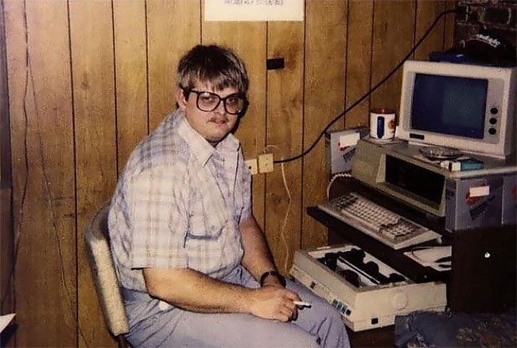
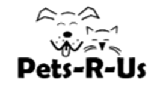

About nodebucket

In 1987, during an intense design session, computer hobbyist, Arnold Parker,
forgot he was supposed to pick up his beloved mother at the fabric store.
While Arnold's mom threatened to kick him out of the basement, he envisioned
a computer program that could help people organize, manage, and track their
daily work. That was the beginning of nodebucket.
Today, nodebucket helps users manage projects of any size. With nodebucket,
project tasks can be assigned to team members and track from start to finish.
The drag and drop feature allows users to simply click and drag tasks from "To do"
to "Done". Tasks can be rearranged in any order. If you want to sort tasks by
priority, complexity or chronological order, nodebucket's simple and efficient
interface gives you the power to manage your tasks your way. Contact nodebucket
today to get your team a smarter project management solution.
Here's what nodebucket users have to say.

"Our productivity increased 30% since we starting using nodebucket."
-Marty, Pets-r-Us

"nodebucket makes managing our catering services a breeze." -Billy,
Billy's Donuts
"Thanks to nodebucket, my team was able to take on more projects in less
time." -Bob, Bob's Computer Repair
Smarter project management with nodebucket.